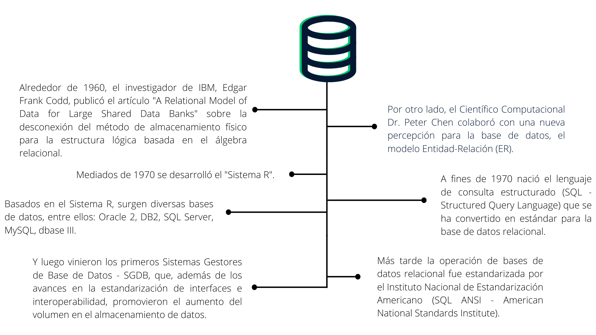
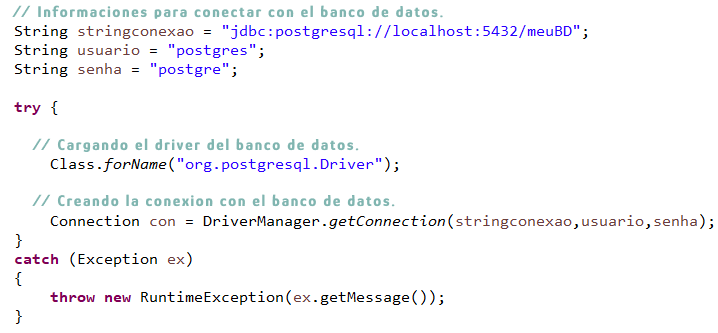

Extras:
-
1 - POO: ¿Qué es la programación orientada a objetos?
-
2 - Creando anotaciones en Java
-
3 - Las características más destacables de Java 8 en adelante
-
4 - Bases de datos relacionales
-
5 - Conociendo JDBC
Compendio
1 - POO: ¿Qué es la programación orientada a objetos?
Programación orientada a objetos y programación estructurada:
Como la mayoría de las actividades que hacemos a diario, la programación también tiene diferentes formas de realizarse.
Estos modos se llaman paradigmas de programación y entre ellos están la programación orientada a objetos (POO) y la
programación estructurada. Cuando comenzamos a usar lenguajes como Java, C#, Python y otros que posibilitan el paradigma
orientado a objetos, es común cometer errores y aplicar la programación estructurada pensando que estamos usando
recursos de la orientación a objetos.
En la programación estructurada, un programa consta de tres tipos básicos de estructuras:
Secuencias: son los comandos a ejecutar
Condiciones: secuencias que solo deben ejecutarse si se cumple una condición (ejemplos: if-else, switch y comandos similares)
Repeticiones: secuencias que deben realizarse repetidamente hasta que se cumpla una condición (for, while, do-while, etc.)
Estas estructuras se utilizan para procesar la entrada del programa, cambiando los datos hasta que se genera la salida esperada.
Hasta ahora, nada que la programación orientada a objetos no haga también, ¿verdad?
La principal diferencia es que, en la programación estructurada, un programa generalmente se escribe en una sola rutina (o función)
y, por supuesto, puede dividirse en subrutinas. Pero el flujo del programa sigue siendo el mismo, como si se pudiese copiar y pegar
el código de las subrutinas directamente en las rutinas que las llaman, de tal forma que, al final, solo existiese una gran rutina que ejecute todo el programa.
Además, el acceso a las variables no tiene muchas restricciones en la programación estructurada. En lenguajes fuertemente basados en
este paradigma, restringir el acceso a una variable se limita a decir si es visible o no dentro de una función (o módulo, como en el uso de la palabra clave static, en lenguaje C), pero no es posible decir de forma nativa que solo se puede acceder a una variable mediante unas pocas rutinas del programa. El esquema para situaciones como estas implica prácticas de programación perjudiciales para el desarrollo del sistema, como el uso excesivo de variables globales. Vale la pena recordar que las variables globales se usan típicamente para mantener estados en el programa, marcando en qué parte de la ejecución se encuentran.
La programación orientada a objetos surgió como una alternativa a estas características de la programación estructurada. El propósito
de su creación fue también acercar el manejo de las estructuras de un programa al manejo de las cosas en el mundo real, de ahí el nombre "objeto" como algo genérico, que puede representar cualquier cosa tangible.
Este nuevo paradigma se basa principalmente en dos conceptos clave: clases y objetos. Todos los demás conceptos, igualmente importantes
, se basan en estos dos.
¿Qué son clases y objetos?
Imagina que recientemente compraste un auto y decidiste modelar ese auto utilizando programación orientada a objetos. Tu auto tiene las características que estabas buscando: motor 2.0 híbrido, azul oscuro, cuatro puertas, cambio automático, etc. También tiene comportamientos que probablemente fueron el motivo de tu compra, como acelerar, reducir la velocidad, encender los faros, tocar la bocina y tocar música. Podemos decir que el auto nuevo es un objeto, donde sus características son sus atributos (datos vinculados al objeto) y sus comportamientos son acciones o métodos.
Tu auto es un objeto tuyo, pero en la tienda donde lo compraste habían otros tantos, muy similares, con cuatro ruedas, volante, cambio, espejos retrovisores, faros, entre otras partes. Ten en cuenta que, aunque tu auto es único (por ejemplo, tiene un registro único en el Departamento de Tránsito), puede haber otros con exactamente los mismos atributos, o similares, o incluso totalmente diferentes, pero que aún se consideran autos. Entonces podemos decir que tu objeto se puede clasificar (es decir, tu objeto pertenece a una clase) como un auto, y que tu auto no es más que una instancia de esa clase llamada "auto".

Así, abstrayendo un poco la analogía, una clase es un conjunto de características y comportamientos que definen el conjunto de objetos pertenecientes a esta clase. Tenga en cuenta que la clase en sí es un concepto abstracto, como un molde, que se vuelve concreto y palpable a través de la creación de un objeto. Llamamos a esta creación de instanciación de clase, como si estuviéramos usando este molde (clase) para crear un objeto.
Ejemplo de Java:
public class Auto {
Double velocidad;
String modelo;
public Auto(String modelo) {
this.modelo = modelo;
this.velocidad = 0;
}
public void acelerar() {
/* código del auto para acelerar */
}
public void frear() {
/* código del auto para frenar */
}
public void acenderFaro() {
/* código del auto para encender el faro */
}
}
Ejemplo en Python:
class Auto:
def __init__(self, modelo):
self.modelo = modelo;
self.velocidad = 0
def acelerar(self):
# Codigo para acelerar el auto
def frear(self):
# Codigo para frenar el auto
def encenderFaro(self):
# Codigo para encender el faro del auto
Encapsulamiento, herencia y polimorfismo: las principales características de la POO
Las dos bases de la POO son los conceptos de clase y objeto. De estos conceptos derivan algunos otros conceptos extremadamente importantes al paradigma, que no solo lo definen, sino que son las soluciones a algunos problemas de la programación estructurada. Los conceptos en cuestión son el encapsulamiento, la herencia, las interfaces y el polimorfismo.
Encapsulamiento
Aun usando la analogía del auto, sabemos que tiene atributos y métodos, es decir, características y comportamientos. Los métodos del auto, como acelerar, pueden usar atributos y otros métodos del auto, como el tanque de gasolina y el mecanismo de inyección de combustible, respectivamente, ya que acelerar consume combustible.

Sin embargo, si algunos de estos atributos o métodos son fácilmente visibles y modificables, como el mecanismo de aceleración del auto, esto puede darle libertad para realizar cambios, lo que resulta en efectos secundarios imprevisibles. En esta analogía, una persona puede no estar satisfecha con la aceleración del auto y cambia la forma en que se produce, creando efectos secundarios que pueden hacer incluso con que el auto ni ande, por ejemplo.
En este caso, decimos que el método de aceleración de su auto no es visible desde el exterior del mismo auto. En la POO, un atributo o método que no es visible desde afuera del mismo objeto se llama "privado" y cuando está visible, se llama "público".
Pero entonces, ¿cómo sabemos cómo acelera nuestro auto? Es simple: no lo sabemos. Solo sabemos que para acelerar hay que pisar el acelerador y el objeto sabe cómo realizar esta acción sin exponer cómo lo hace. Decimos que la aceleración del auto está encapsulada, porque sabemos lo que hará cuando ejecutemos este método, pero no sabemos cómo y, de hecho, al programa no le importa cómo lo hace el objeto, solo que lo haga.
Lo mismo ocurre con los atributos. Por ejemplo: no sabemos cómo el auto sabe qué velocidad mostrar en el velocímetro o cómo calcula su velocidad, pero no necesitamos saber cómo se hace eso. Solo necesitamos saber que nos dará la velocidad adecuada. Se puede leer o cambiar un atributo encapsulado desde getters y setters.
Ese encapsulamiento de atributos y métodos evita la llamada fuga de alcance, donde un atributo o método es visible para alguien que no debería poder verlo, como otro objeto o clase. Esto evita confundir el uso de variables globales en el programa, facilitando identificar en qué estado estará cada variable en cada momento del programa, ya que la restricción de acceso nos permite identificar quién puede modificarla.
Ejemplo en Java:
public class Auto {
private Double velocidad;
private String modelo;
private MecanismoAceleracion mecanismoAceleracion;
private String color;
/* Vea que se inserta el mecanismo de aceleración en el auto al construirse, y
no lo vemos ni podemos modificarlo, es decir, no tiene getter ni setter.
Ya el "modelo" se puede ver, pero no se puede alterar. */
public Auto(String modelo, MecanismoAceleracion mecanismoAceleracion) {
this.modelo = modelo;
this.mecanismoAceleracion = mecanismoAceleracion;
this.velocidad = 0;
}
public void acelerar() {
this.mecanismoAceleracion.acelerar();
}
public void frenar() {
/* código del auto para frenar */
}
public void encenderFaro() {
/* código del auto para encender el faro */
}
public Double getVelocidad() {
return this.velocidad
}
private void setVelocidad() {
/* código para alterar la velocidad del auto */
/* Como solo el propio auto debe calcular la velocidad,
este método no se puede llamado de afuera, por eso es "private" */
}
public String getModelo() {
return this.modelo;
}
public String getCor() {
return this.cor;
}
/* podemos cambiar el color del auto cuando deseemos */
public void setCor(String color) {
this.cor = color;
}
}
Ejemplo en Python:
# Ejemplo de la clase Auto en Python
class Auto:
def __init__(self, modelo, mecanismoAceleracion):
self.__modelo = modelo;
self.__velocidad = 0
self.__mecanismoAceleracion = mecanismoAceleracion
def acelerar(self):
mecanismoAceleracion.acelerar()
def frear(self):
# Codigo para frenar el auto
def encenderFaro(self):
# Codigo para encender el faro del auto
def getVelocidad(self):
return self.velocidad
def __setVelocidad(self):
# Codigo para alterar la velocidad por dentro del objeto
def getModelo(self):
return self.modelo
def getColor(self):
return self.color
def setColor(self, color):
self.color = color
Herencia:
En nuestro ejemplo, acabas de comprar un auto con los atributos que buscabas. A pesar de ser únicos, hay autos con exactamente los mismos atributos o formas modificadas. Digamos que compraste el modelo Fit de Honda. Este modelo tiene otra versión llamada WR-V (o "Honda Fit Cross Style"), que tiene muchos de los atributos de la versión clásica, pero con algunas diferencias muy grandes para transitar por caminos de tierra: el motor es híbrido (acepta alcohol y gasolina), tiene un sistema de suspensión diferente, y supongamos que además tenga un sistema de tracción diferente (tracción a las cuatro ruedas, por ejemplo). Vemos entonces que no solo cambian algunos atributos sino también algunos mecanismos (o métodos, traduciéndose a POO), pero esta versión "cross" sigue siendo el modelo Honda Fit, es decir, es un tipo del modelo.
Cuando decimos que una clase A es un tipo de clase B, decimos que clase A hereda las características de la clase B y que la clase B es madre de la clase A, estableciendo entonces una relación de herencia entre ellas. En el caso del auto, decimos que un Honda Fit "Cross" es un tipo de Honda Fit, y lo que cambia son algunos atributos (tapabarros reforzado, altura de la suspensión, etc.), y uno de los métodos de la clase (acelerar, ya que ahora hay tracción en las cuatro ruedas), pero todo lo demás sigue igual, y el nuevo modelo recibe los mismos atributos y métodos que el modelo clásico.
Ejemplo en Java:
// "extends" establece la relacion de herencia con la clase Auto
public class HondaFit extends Auto {
public HondaFit(MecanismoAceleracion mecanismoAceleracion) {
String modelo = "Honda Fit";
// llama al constructor de la clase madre, es decira, de la clase "Auto"
super(modelo, mecanismoAceleracion);
}
}
Ejemplo en Python:
# Las clases dentro del parénteses son las clases madre de la clase definiendose
class HondaFit(Auto):
def __init__(self, mecanismoAceleracion):
modelo = "Honda Fit"
# llama al constructor de la clase madre, es decir, de la clase "Auto"
super().__init__(self, modelo, mecanismoAceleracion)
Interfaz:
Muchos de los métodos de los autos son comunes en muchos automóviles. Tanto un auto como una motocicleta son clases cuyos objetos pueden acelerar, frenar, encender los faros, etc., ya que son comunes a los automóviles. Podemos decir, entonces, que tanto la clase "auto" como la "motocicleta" son "automóviles".
Cuando dos (o más) clases tienen comportamientos comunes que pueden separarse en otra clase, decimos que la "clase común" es una interfaz, que puede ser "heredada" por las otras clases. Tenga en cuenta que colocamos la interfaz como una "clase común", que puede ser "heredada" (con comillas), porque una interfaz no es exactamente una clase, sino un conjunto de métodos que todas las clases que heredan de ella deben tener (implementar) - por lo tanto, una interfaz no es "heredada" por una clase, sino implementada. En el mundo del desarrollo de software, decimos que una interfaz es un "contrato": una clase que implementa una interfaz debe proporcionar una implementación para todos los métodos que define la interfaz y, a cambio, la clase de implementación puede decir que es del tipo de interfaz. En nuestro ejemplo, "auto" y "motocicleta" son clases que implementan los métodos de la interfaz "automóvil", por lo que podemos decir que cualquier objeto de estas dos primeras clases, como una Honda Fit o una motocicleta Yamaha, son automóviles.
Un pequeño detalle: una interfaz no puede ser heredada por una clase, sino implementada. Sin embargo, una interfaz puede heredar de otra interfaz, creando una jerarquía de interfaces. Usando un ejemplo completo con autos, decimos que la clase "Honda Fit Cross" hereda de la clase "Honda Fit", que a su vez hereda de la clase "Auto". La clase "Auto" implementa la interfaz "Automóvil" que, a su vez, puede heredar (por ejemplo) una interfaz llamada "MedioDeTransporte", ya que tanto un "automóvil" como un "carro" son medios de transporte, aunque un carro no sea un automóvil.
EJemplo en Java:
public interface Automovil {
void acelerar();
void frenar();
void encenderFaro();
}
public class Auto implements Automovil {
/* ... */
@Override
public void acelerar() {
this.mecanismoAceleracion.acelerar();
}
@Override
public void frenar() {
/* código del auto para frenar */
}
@Override
public void encenderFaro() {
/* código del auto para encender el faro */
}
/* ... */
}
public class Moto implements Automovil {
/* ... */
@Override
public void acelerar() {
/* código específico de la moto para acelerar */
}
@Override
public void frenar() {
/* código específico de la moto para frenar */
}
@Override
public void encenderFaro() {
/* código específico de la moto para encender el faro */
}
/* ... */
}
Ejemplo en Python:
class Automovil():
def acelerar(self):
raise NotImplementedError()
def frenar(self):
raise NotImplementedError()
def encenderFarol(self):
raise NotImplementedError()
class Auto(Automovil):
# ...
def acelerar(self):
# Codigo para acelerar el auto
def frenar(self):
# Codigo para frenar el auto
def encenderFaro(self):
# Codigo para encender el faro del auto
# ...
class Moto(Automovil):
# ...
def acelerar(self):
# Codigo para acelerar la moto
def frear(self):
# Codigo para frenar la moto
def encenderFaro(self):
# Codigo para encender la moto
# ...
Nota: crea un error de tipo NotImplementedError, aquello, evidencia que, si una clase hija intenta ejecutar un método de la clase padre sin haberlo implementado, se produce el error. En Python, las interfaces se crean como clases normales que heredan las clases hijas. Hay formas de forzar la implementación por parte de las clases hijas, pero para nuestro ejemplo, este abordaje es suficiente.
Polimorfismo:
Digamos que una de las razones por las que compraste un auto fue la calidad de su sistema de sonido. Pero, en su caso, digamos que la reproducción solo se puede hacer por radio o bluetooth, mientras que en su auto antiguo, solo se puede hacer a través de la tarjeta SD y pendrive. El método de "reproducir música" está presente en ambos autos, pero como su sistema de sonido es diferente, la forma en que el automóvil reproduce música es diferente. Decimos que el método "reproducir música" es una forma de polimorfismo, porque dos objetos, de dos clases diferentes, tienen el mismo método que se implementa de diferentes maneras, es decir, un método tiene varias formas, varias implementaciones diferentes en diferentes clases, pero que tienen el mismo efecto ("polimorfismo" proviene del griego poli = muchas, morfos= forma).
Ejemplo en Java:
public class Main {
public static void main(String[] args) {
Automovil moto = new Moto("Yamaha XPTO-100", new MecanismoDeAceleracionDeMotos())
Automovil auto = new Auto("Honda Fit", new MecanismoDeAceleracionDeAutos())
List listaAutomoviles = Arrays.asList(moto, auto);
for (Automovil automovil : listaAutomoviles) {
automovil.acelerar();
automovil.encenderFaro();
}
}
}
Ejemplo en Python:
def main():
moto = Moto("Yahama XPTO-100", MecanismoDeAceleracionDeMotos())
auto = Auto("Honda Fit", MecanismoDeAceleracionDeAutos())
listaAutomoviles = [moto, auto]
for automovil in listaAutomoviles:
automovil.acelerar()
automovil.encenderFaro()
Ten en cuenta que, aunque son objetos diferentes, moto y auto tienen los mismos métodos acelerar y encenderFaro, que se llaman igual, a pesar de estar implementados de manera diferente.
Design Patterns:
Algunos problemas aparecen con tanta frecuencia en POO que sus soluciones se han convertido en estándares de diseño de sistemas y modelado de código orientado a objetos para solucionarlos. Estos estándares de proyecto, (o design patterns) no son más que formas estandarizadas de solucionar problemas comunes en lenguajes orientados a objetos. El libro "Design Patterns", conocido como Gof:Gang of Four, es la principal referencia en este tema, conteniendo los principales estándares utilizados en grandes proyectos.
Clean code y SOLID
En proyectos desarrollados con POO, como en cualquier otro, el código puede volverse desordenado y difícil de mantener a medio y largo plazo. Ante esta situación, se han desarrollado algunos principios de buenas prácticas de programación y código limpio, por ejemplo:
KISS (Keep It Simple, Stupid, "Mantén las cosas sencillas"): Siempre que se escribe un código, debe escribirse de la manera más sencilla posible, para mantener el código más legible. Códigos demasiado complejos son más difíciles de mantener, ya que es más difícil entender qué hace y cómo lo hace.
DRY (Don't Repeat Yourself, "No repita"): Todo el código escrito para solucionar un problema debe escribirse solo una vez, para evitar la repetición del código. Es casi una variación de KISS, ya que la repetición del código lo hace más confuso y difícil de mantener y corregir, si es necesario.
Además de los design patterns y de los principios del código limpio existe un conjunto de técnicas, más generalizadas que los design patterns, que ayudan a crear código orientado a objeto para hacerlo más maleable, permitiendo un mantenimiento y expansión del código más fluido y sin complicaciones a lo largo del tiempo.
2 - Creando anotaciones en Java
Tenemos la siguiente clase que representa a un usuario en nuestro sistema:
public class Usuario {
private String nombre;
private String identidad;
private LocalDate fechaNacimiento;
}
Para guardar un nuevo usuario, se realizan varias validaciones, como por ejemplo: Ver si el nombre solo contiene letras, la IDENTIDAD solo números y ver si el usuario tiene al menos 18 años. Aquí está el método que hace esta validación:
public boolean usuarioValido(Usuario usuario){
if(!usuario.getNombre().matches("[a-zA-Záàâãéèêíïóôõöúçñ\\s]+")){
return false;
}
if(!usuario.getIdentidad().matches("[^0-9]+")){
return false;
}
return Period.between(usuario.getFechaNacimiento(), LocalDate.now()).getYears() >= 18;
}
Supongamos ahora que tengo otra clase, la clase Producto, que contiene un atributo nombre y quiero hacer la misma validación que hice para el nombre de usuario: Ver si sólo contiene letras. ¿Y entonces? ¿Voy a crear otro método para hacer la misma validación? ¿O crear una interfaz o una clase que tanto Usuario como Producto extienden? No tiene mucho sentido ¿verdad? ¿Cómo resolver este caso sin repetir código?
Anotaciones:
En Java 5 se ha introducido un nuevo recurso al lenguaje, las anotaciones. Permiten que los metadatos se escriban directamente en el código.
Los metadatos son, por definición, datos que hacen referencia a los propios datos.
En el contexto de la orientación a objetos, los metadatos son informaciones sobre los elementos del código. Esta información se puede definir en cualquier medio, solo con que el software o componente la recupere y la utilice para agregar nueva información en los elementos del código.
Ten en cuenta que las notas por sí solas no hacen nada. Necesitan que la aplicación las recupere y las utilice para que solo así puedan proporcionarnos algo que podamos usar para realizar alguna tarea.
Volviendo a nuestro problema, vamos a crear una anotación para validar la edad mínima del usuario. Para ello, vamos a anotar nuestra clase:
public class Usuario {
private String nombre;
private String identidad;
@EdadMinima
private LocalDate fechaNacimiento;
Si miramos nuestro código nos daremos cuenta de que no compila, ya que falta implementar la anotación @EdadMinina. Por lo tanto, necesitamos crear una nueva clase con el nombre IdadeMinima:
public class EdadMinima {
}
Pero, pensándolo bien, ¿estamos creando una clase? ¡No lo estamos! Por lo tanto, la nomenclatura es diferente para una anotación. La forma correcta sería:
public @interface EdadMinima {
}
Extraño, ¿no? Pero fue la manera que la gente de Java hizo para decir que ese archivo es una anotación.
Ahora tenemos que anotar nuestra interfaz con algunas anotaciones obligatorias para que Java entienda dónde y cuándo se puede utilizar su anotación, siendo ellas:
- @Retention - Aquí hablaremos de nuestra aplicación hasta que nuestra anotación esté disponible.
- @Target - Aquí pasaremos los elementos que se pueden anotar con esta anotación.
¿Hasta dónde estará disponible nuestra anotación? Necesitamos que se ejecute cuando el usuario envíe sus datos, y esto sucede cuando nuestra aplicación se está ejecutando, por lo que la necesitamos en tiempo de ejecución, Runtime:
@Retention(RetentionPolicy.RUNTIME)
public @interface EdadMinima {
}
¿Y quién será anotado? ¿Qué elemento tiene sentido ser anotado con una anotación que verifica si el usuario tiene edad suficiente? ¿Un atributo, cierto? Luego, un Field:
@Target(ElementType.FIELD)
@Retention(RetentionPolicy.RUNTIME)
public @interface EdadMinima {
}
Ahora que hemos especificado el contexto de nuestra anotación, tenemos que hablar de la edad mínima que nuestra anotación debe utilizar para validar la edad del usuario, para ello, vamos a crear una propiedad en nuestra anotación llamada valor:
@Retention(RetentionPolicy.RUNTIME)
@Target(ElementType.FIELD)
public @interface EdadMinima {
int valor();
}
Nuestra anotación está completa, ahora anotemos el atributo fechaNacimiento de la clase Usuario con ella:
public class Usuario {
private String nombre;
private String identidad;
@EdadMinima
private LocalDate fechaNacimiento;
//getters e setters
}
Solo haciendo eso, recibiremos un error de compilación. Necesitamos pasar la edad mínima para nuestra anotación, luego:
public class Usuario {
private String nombre;
private String identidad;
@EdadMinima(valor=18)
private LocalDate fechaNacimiento;
//getters e setters
}
Para validar esta anotación vamos a crear un usuario y pasar a un método validador():
public static void main(String[] args) {
Usuario usuario = new Usuario("Maria", "42198284863", LocalDate.of(1995, Month.MARCH, 14));
System.out.println(validador(usuario));
}
Ahora vamos a crear el método validador() que devolverá un boolean:
public static boolean validador(Usuario usuario) {
}
El problema de crear nuestro método de esta manera es que nuevamente nosotros estamos limitandonos a validar solo usuarios, solo que nuestra meta es validar cualquier objeto.
Para ello, podemos hacer uso de Generics que, en nuestro caso, permitirá recibir un objeto de cualquier tipo:
public static boolean validador(T objeto) {
}
Ahora estamos hablando de que vamos a recibir un objeto de tipo genérico T. Pero hacerlo no es suficiente, necesitamos validar ese objeto. ¿Y cómo validamos un objeto que no conocemos?
Necesitamos descubrir, en tiempo de ejecución, informaciones acerca del objeto que llegará en nuestro método, luego, podemos usar reflexión. Con reflexión podemos descubrir y operar datos de la clase. Entonces, primero, vamos a tomar la clase de ese objeto:
public static boolean validador(T objeto) {
Class clase = objeto.getClass();
}
Con eso conseguimos operar la clase referente al tipo del objeto recibido. Primero, averigüemos qué atributo de nuestra clase está anotado con @EdadMinima.
Para averiguarlo, iteraremos sobre los atributos de la clase utilizando el método getDeclaredFields():
public static boolean validador(T objeto) {
Class clase = objeto.getClass();
for (Field field : clase.getDeclaredFields()) {
}
}
Ahora estamos iterando por todos los atributos de clase de nuestro objeto. El siguiente paso es averiguar qué campo está anotado con nuestra anotación.
Usaremos el método isAnnotationPresent(). Este método comprueba si el campo contiene la anotación pasada y devuelve un boolean.
public static boolean validador(T objeto) {
Class clase = objeto.getClass();
for (Field field : clase.getDeclaredFields()) {
if (field.isAnnotationPresent(EdadMinima.class)) {
}
}
}
Si entra en el if sabremos que el campo tiene la anotación EdadMinima. Solo falta comparar la edad mínima que asignamos en nuestra anotación con la edad pasada. Para hacer eso vamos a recoger nuestra anotación.
Para conseguir nuestra anotación usaremos el método getAnnotation() pasando nuestra anotación:
public static boolean validador(T objeto) {
Class clase = objeto.getClass();
for (Field field : clase.getDeclaredFields()) {
if (field.isAnnotationPresent(EdadMinima.class)) {
EdadMinima edadMinima = field.getAnnotation(EdadMinima.class);
}
}
}
Tenemos un objeto del tipo de nuestra anotación, con él conseguimos coger la edad mínima que setamos. Ahora necesitamos, también, la edad pasada por el usuario.
Para acceder al valor de un atributo private necesitamos decir que este atributo está accesible de esta manera:
public static boolean validador(T objeto) {
Class clase = objeto.getClass();
for (Field field : clase.getDeclaredFields()) {
if (field.isAnnotationPresent(EdadMinima.class)) {
EdadMinima edadMinima = field.getAnnotation(EdadMinima.class);
field.setAccessible(true);
}
}
}
Pero tenga en cuenta que no recibimos la edad del usuario, recibimos su fecha de nacimiento. Tenemos que tomar esta fecha y averiguar la edad del usuario. Para obtener el valor del atributo anotado con @EdadMinima usaremos el método get() de la clase Field:
public static boolean validador(T objeto) {
Class clase = objeto.getClass();
for (Field field : clase.getDeclaredFields()) {
if (field.isAnnotationPresent(EdadMinima.class)) {
EdadMinima edadMinima = field.getAnnotation(EdadMinima.class);
try{
field.setAccessible(true);
LocalDate fechaNacimiento = (LocalDate) field.get(objeto);
} catch (IllegalAccessException e) {
e.printStackTrace();
}
}
}
}
Tenga en cuenta que hemos hecho un cast para LocalDate, ya que el método get() nos devuelve un objeto.
Para finalizar, vamos a comparar para ver si el período entre fechaNacimiento y la fecha actual es mayor o igual al valor que colocamos como edad mínima en nuestra anotación:
En la comparación usaremos el método between() que toma como parámetro dos fechas para ser comparadas, el método now() para obtener la fecha actual y el método getYears() para saber el valor del período en años:
public static boolean validador(T objeto) {
Class clase = objeto.getClass();
for (Field field : clase.getDeclaredFields()) {
if (field.isAnnotationPresent(EdadMinima.class)) {
EdadMinima edadMinima = field.getAnnotation(EdadMinima.class);
try{
field.setAccessible(true);
LocalDate fechaNacimiento = (LocalDate) field.get(objeto);
return Period.between(fechaNacimiento, LocalDate.now()).getYears() >= EdadMinima.valor();
} catch (IllegalAccessException e) {
e.printStackTrace();
}
}
}
return false;
}
Tenga en cuenta que tomamos el período en años y comparamos para ver si el valor es mayor o igual a EdadMinina.valor() que no es más que el valor que ponemos en nuestra anotación. Además, al final volvemos falso, ya que si ningún campo del objeto posee la anotación @IdadeMinima no puede ser validado.
public static void main(String[] args) {
Usuario usuario = new Usuario("Maria", "52902488033", LocalDate.of(2005, Month.JANUARY, 13));
System.out.println(validador(usuario));
}
La fecha de nacimiento del usuario creado es 13/01/2005, por lo que comparado con la fecha actual resultará en false. Vamos a ver:
Ahora vamos a probar con la fecha 10/01/2000:
public static void main(String[] args) {
Usuario usuario = new Usuario("Maria", "52902488033", LocalDate.of(2000, Month.JANUARY, 13));
System.out.println(validador(usuario));
}
¡Bien! Ahora nuestro validador() puede validar cualquier clase que tenga nuestra anotación.
Conclusión:
En este post podemos descubrir el poder de la reflexión, realmente nos ayuda y mucho cuando necesitamos operar sobre la clase de los objetos dinámicamente.
Con anotaciones hemos sido capaces de marcar los elementos de nuestra aplicación para que nuestro método que usa reflexión logre captar informaciones útiles para que fuese posible ejecutar nuestra lógica de validación.
Usar la reflexión es muy útil cuando queremos crear algo más genérico, pero debemos tener cuidado porque con la reflexión, operamos sobre los tipos de objetos dinámicamente y esto hace que algunas optimizaciones de la máquina virtual no se ejecuten. Así que tenemos que tener cuidado de ver dónde es realmente necesario el uso de la reflexión.
3 - Las características más destacables de Java 8 en adelante
Java es uno de los lenguajes de programación más potentes. El lenguaje se volvió más fuerte cuando Oracle lanzó una nueva versión de Java, Java SE 8, el 18 de marzo de 2014 con novedades importantes.
1. Expresión Lambda:
La expresión Lambda es una función anónima (una función sin nombre) que ayuda a escribir código en un cierto estilo funcional. Dado que los datos se pueden iterar, filtrar y extraer, es muy útil, especialmente en la biblioteca de recopilación. La expresión Lambda también ayuda a reducir la complejidad del código.
Sintaxis
(Parametros) -> Expresión
Código:
(a,b) -> a + b // Esto nos devuelve la suma de a + b
2. Stream API:
Stream API ofrece una técnica para el procesamiento de datos de diferentes maneras, como filtrado, extracción, transformación, con la ayuda del paquete java.util.stream. Una de las principales ventajas de Stream API es que no altera su fuente, es decir, si se filtra un conjunto de datos, se crea un nuevo conjunto de datos con los datos filtrados en lugar de modificar la fuente original. Stream API evalúa el código sólo cuando es necesario y no repite el código más de una vez.
3. Método ForEach ():
Java SE8 ofrece un nuevo método llamado forEach que se define en la interfaz Iterable. El bucle ForEach () se puede usar en una clase de colección que extiende la interfaz Iterable. Como este método ingresa un solo parámetro, una expresión lambda también se puede pasar como parámetro.
Código: Recurre cada edad y la imprime
edad.forEach( edad -> (System.out.println(edad);));
4. Método predeterminado:
Normalmente, los métodos no abstractos no se pueden agregar a las interfaces. Pero en el caso de Java 8, podemos agregar esos métodos en las interfaces. Estos métodos se escriben con una palabra clave predeterminada y se conocen como métodos predeterminados. Como son métodos no abstractos, también se puede incluir el cuerpo del método por ej:
public interface Movible(
default void Sonido()(
System.out.println("Hola Ana, ¿cómo está mi sonido?");
))
5. Fecha Hora API:
En Java 8, se ha introducido una nueva API de tiempo y API de fecha donde las fechas de manejo están en un método diferente en comparación con otras versiones de Java. Algunas de las siguientes son clases de hora y fecha que están disponibles en Java. paquete de tiempo:
Clase Jtime.LocalDate
Clase LocalTime
Clase LocalDateTime
Clase de MonthDay
Código:
Clock cl = Clock.systemDefaultZone();
System.out.println(cl.getZone());
7. Referencias de métodos:
Las referencias de métodos son otra característica que se introduce en Java 8, que se puede usar en métodos de interfaz funcional. De otra manera, se puede decir que son un subconjunto de otra característica de Java, las expresiones lambda. Esto se debe a que también se puede usar una referencia de método si se puede usar una expresión lambda.
Los métodos pueden ser:
- Referencia al constructor
- Referencia al método estático
- Referencia a un método de instancia
Diferencias entre java 8 y Java 9:
Java SE8 es la nueva versión de Java desarrollada por Oracle que ofrece varias características nuevas. La expresión lambda se considera como la característica más significativa entre ellas.
Ahora es momento de hablar sobre Java 9, el principal cambio que tuvo el JDK 9 fue la introducción de un componente llamada "el módulo" el proyecto Jigsaw.
Es un proyecto que nos ayuda a reducir el tamaño y complejidad tanto de las aplicaciones java como del propio runtime de java JRE, de este modo podemos utilizar solamente lo que necesitamos en nuestra aplicación y no la plataforma java completa.
También tuvimos la implementación del Método Factory que proviene del patrón de proyecto llamado Factory. La idea es que, pensando en las relaciones entre objetos, los métodos de interfaz sean creados sin especificar sus clases concretas. Hablar así puede parecer extraño pero esta implementación, cuando pensamos en el método .of() se usa frecuentemente al pensar en Enums en Java.
Al finalizar Java 9, no podemos dejar de mencionar la incorporación del flujo reactivo por medio del Flow Api, una clase llamada Flow en el paquete Util de Java que busca mejorar el flujo de procesamiento asincrónico de datos. Tenemos cuatro clases que trabajan este flujo: Suscripción, Procesador, Suscriptor y Publicador.
Clase Suscriptor trabaja como origen de los mensajes y demandas.
Clase Publicador trabaja con el procesamiento de las demandas de forma asincrónica.
Clase Suscripción se encarga de la conexión entre las clases Suscriptor y Publicador al manejar los mensajes de control.
Clase Procesador puede trabajar tanto como la clase Suscriptor como la clase Publicador.
Una vez mencionadas las características más destacables de esta versión, pasemos a java 10.
Características de Java 10:
1. Inferencia de tipo variable local
Esta nueva característica busca simplificar y mejorar la experiencia del desarrollador. La nueva sintaxis reducirá la longitud del código relacionado con Java, al mismo tiempo que mantendrá el compromiso de la seguridad del tipo estático.
La inferencia de tipo variable local introducirá la palabra clave var, es decir, puede definir libremente las variables sin tener que especificar el tipo de variable, como por ej:
Pasamos de esto:
list list = new ArrayList ();
Stream stream = getStream();
A esto:
var list = new ArrayList ();
var stream = getStream();
2- Interfaz del Recolector de Basura
En la estructura anterior de JDK, los componentes que formaban una implementación del Recolector de Basura (GC) estaban dispersos en varias partes del código base. Esto ha cambiado en Java 10. Ahora, es una interfaz limpia dentro del código fuente de JVM para permitir que los colectores alternativos se integren rápida y fácilmente. Mejorará el aislamiento del código fuente de los diferentes recolectores de basura.
Características de Java 11:
1- Cliente HTTP
La meta con la nueva característica API HttpClient es proporcionar una manera estándar de consumir ApiRest, usando patrones modernos y mejores prácticas ya aplicadas en las librerías de terceros mencionadas anteriormente.
Tiene también, soporte para conexiones seguras, HTTP2, websockets y request asíncronos. Hay 3 conceptos básicos en este API:
HttpClient: Se encarga de crear la conexión y su configuración. Proxies, Authenticators, executors pools, cookie manager, etc.
HttpRequest: Es básicamente el request a un URI. Podemos indicar el timeout, headers, si el request es asíncrono o síncrono.
HttpResponse: Objeto para manejar la respuesta del request. En él se puede ver el status code, body response, headers y más.
2- Ejecución desde archivo de código fuente único
Para ejecutar un programa Java es necesario primero compilarlo a bytecode para posteriormente ejecutarlo. Se necesitan dos pasos para facilitar la ejecución de los programas que se componen de un único archivo de código fuente, se suma la posibilidad de lanzar un programa desde el código fuente. Esto es útil para programas pequeños o para los casos de estar aprendiendo el lenguaje.
Y por último vamos a repasar algunas características de Java 17 en este artículo.
Características de Java 17:
Se definió un estándar para el switch ya muy usado en Java y otros lenguajes con un foco en una mejor legibilidad y modelado del código. Se evita así el uso de repetidos IF/ELSE y el operador instanceOf. Este estilo es algo más declarativo, podemos visualizarlo mejor con un ejemplo:
static String formateo (Object o){
String formato = "desconocido";
if(o instanceof Integer i){
formato = String.format("int %d", i);
}else if (o instanceof Long l){
formato = String.format("long %d", l);
}else if(o instanceof Double d){
formato = String.format("double %f" , d);
}else if(o instanceof String s){
if(s.length > 3){
formato = String.format("Cadena Corta %s" + s);
}else{
formato = String.format("Cadena Larga %s" + s);
}
}
return formato;
}
Ahora podemos hacerlo de esta otra forma:
static String formatoSwitch (Object o){
return switch (o) {
case Integer i -> String.format("int %d" , i);
case Long l -> String.format("long %d", l);
case Double d -> String.format("double %f" , d);
case String s && (s.length > 3) -> String.format("Cadena Corta %s", s);
case String s && (s.lenght > 10) -> String.format("Cadena Larga %s", s);
default -> o.toString();
};
}
Se elimina Applet API de Java, que generaba un archivo binario que podía ser utilizado para tener pantallas web. Ya había sido definido como obsoleto en Java 9 pero solo ahora en Java 11 fue oficialmente eliminado
Además, se mejoró la parte referente a generación de números aleatorios, introduciendo una nueva interfaz llamada RandomGenerator, una API uniforme que puede generar números para diferentes tipos numéricos.
Finalmente vamos a hablar un poquito sobre Java 18sin ser una versión LTS.
Características de Java 18:
Java 18 fue lanzado a principios de 2022 y cuenta con actualizaciones no enfocadas directamente en el código Java, sino en la plataforma de desarrollo. Fue estandarizado el conjunto de caracteres con el UTF-8 y se agregó una etiqueta @Snippet para agregar código fuente en documentaciones creadas para códigos/proyectos en el lenguaje. Creando una utilización con pocas líneas de código para generar un simple servidor web para el programador.
Conclusión
Finalmente podemos sacar una conclusión de toda esa nueva información que tenemos sobre las diferentes versiones de nuestro querido Java. Es que nos ahorramos de escribir tanto código usando la sentencia Switch en vez de escribir tantos IF/ELSE anidados, podemos escribir código funcional a través de las Lambda. Tenemos el bucle forEach, manejamos de una formas más eficiente las fechas y las horas con las nuevas APIS, ya no es obligatorio preceder el nombre de una variable con el tipo de dato, sino que usamos la palabra "var" y consumir de una mejor manera las ApiRest a través del cliente HTTP.
4 - Bases de datos relacionales
Alguna vez te has preguntado, ¿qué es una base de datos?
La base de datos representa colecciones de registros almacenados. El modelo relacional muestra esta representación de datos como una colección de filas y columnas. Además, vale señalar que el nombre relacional surgió del hecho de que las tablas tienen relaciones entre sí.
En el contexto de la base de datos, relacional significa la constitución o indicación de un vínculo que se aplica a la relación de datos.
En este sentido, la base de datos relacional es un tipo de base de datos que almacena y proporciona información relacionada entre sí de forma que el usuario las percibe como tablas.
¿Cómo están organizados los datos?
Los datos son los elementos individuales que componen los registros, que pertenecen al campo que compone la tabla.
La estructura lógica de datos agrega un mecanismo de organización en Tablas (entidades o relaciones) con los Registros (tuplas o filas) y los Campos (columnas o atributos), que son los identificadores de la información.
Todo este proceso de organización se llama normalización.
Vea el siguiente ejemplo de la tabla Productos:
Ahora, supongamos una tabla Cliente: sus atributos son codigo, nombre, numeroTelefono y las entidades reciben las siguientes instancias {{1, "Maria", 1124421020} {2, "Mario", 1324111020}}.
De esta forma, ¿cómo sabemos que la tabla Productos pertenece a la tabla Cliente Maria?
La relación entre tablas se establece mediante la identificación única de cada registro en una tabla. Estos identificadores únicos se denominan claves primarias (en inglés, Primary Keys o "PK").
Las claves primarias facilitan la vinculación de información en tablas independientes. Se recomienda una clave primaria en cada tabla y como resultado identificamos que la tabla Productos pertenece a la tabla Cliente María.

Tenga en cuenta la clave principal de la tabla Productos representada por la columna ID y la columna de código de la tabla Cliente. Al consultar la base de datos, es a través de las claves que se ubican sus relaciones en un conjunto de datos. Por tanto, la clave como identificación exclusiva es fundamental para realizar la relación entre las tablas y garantizar la seguridad de la información.
Características:
El esquema de base de datos relacional, en el que los datos están organizados física y lógicamente, es capaz de garantizar el almacenamiento, investigación y recuperación de tablas con relaciones que siguen cuidadosamente las reglas de consistencia y seguridad de la información.
De esta forma, las transacciones de la base de datos relacional obedecen a los paradigmas denominados ACID:
- Atomicidad: indica los elementos que componen una transacción completa;
- Consistencia: define las reglas para mantener la integridad de los datos en un estado correcto después de una transacción;
- Aislamiento: preserva el efecto de una transacción invisible para otras personas hasta que se confirme, para evitar confusiones;
- Durabilidad: garantiza que los cambios de datos sean permanentes después de la transacción confirmada;
Y ahí viene la historia...
Antiguamente los datos eran almacenados e indexados en archivos generando innumerables inconvenientes. Sin embargo, la automatización trajo soluciones mecánicas eficientes.

¿Cómo funciona el sistema de gestión de base de datos?
El Sistema de gestión de bases de datos relacionales (del inglés: Relational database management system - RDBMS) realiza el modelo operativo de la estructura de almacenamiento de información para la gestión y el control.
Existen diferentes sistemas de gestión con diferentes niveles de aplicabilidad, escalabilidad y organización:
A pesar de tener sus propias características, existen algunas funciones básicas que son comunes al SGBDR (Sistema Gestor de Base de Datos Relacional).
El Lenguaje de Consulta Estructurada (SQL), por ejemplo, representa un conjunto de comandos de manipulación de bases de datos. A través del lenguaje SQL es posible crear, borrar, modificar y buscar información en las tablas de una base de datos relacional.
SQL es un lenguaje declarativo estándar para bases de datos relacionales y se puede subdividir en grupos según los tipos de operaciones, como:
Lenguaje de Definición de Datos (DDL - Data Definition Language) para creación de tablas, maneja esquemas y descripción de los datos con relación lógica en la base;
Lenguaje de Manipulación de Datos (DML - Data Manipulation Language) utilizado para almacenar, modificar, recuperar, eliminar y actualizar los datos almacenados;
Lenguaje de Control de Datos (DCL - Data Control Language) emplea el sistema de seguridad con los permisos y control del sistema de base de datos;
Lenguaje de Control de Transacciones (TCL - Transaction Control Language) gestiona transacciones, importaciones y exportaciones dentro de la base de datos;
Conclusión
La base de datos relacional proporciona relaciones valiosas para recuperar y comprender datos con el fin de establecer la integridad y coherencia en su gestión.
Con el crecimiento exponencial del volumen de datos digitales, se puede decidir que el gran desafío de las tecnologías de la información abarca el almacenamiento, la velocidad y el valor de los datos. En este sentido, ¿qué base de datos utilizar?
Bien, La elección depende exclusivamente del proyecto de software a desarrollar. Sistema ERP (Planificación de Recursos Empresariales - en inglés Enterprise Resource Planning) y CRM (Gestión de Relaciones con el Cliente - en inglés Customer Relationship Management), por ejemplo, usar bases de datos relacionales debido a la facilidad de almacenamiento y confiabilidad de la información, y es precisamente por estas razones que las bases de datos relacionales son populares en el mercado.
Por lo tanto, en el caso de sistemas que necesiten mayor consistencia en las relaciones, para que las entidades estén listas para operar con integridad, posiblemente la base de datos relacional sea una buena opción.
5 - Conociendo JDBC
Para comenzar a hablar sobre JDBC, vamos a pensar en la siguiente situación: tu eres contratado para desarrollar una aplicación en Java del tipo desktop. Como desafió, tu necesitas hacer la integración de la aplicación con un banco de datos MySQL, que ejecuta locamente, y otro banco SQL Server, rodando en un servidor Windows.
¿Cómo hacer eso? Si fueras a usar lenguaje Java, una opción será la utilización de los recursos da API JDBC.
Los bancos de datos relacionales aun representan la gran mayoría de las soluciones de datos encontrados en el mercado. Crear un sistema es una actividad que, en algún momento, va exigir que tu introduzcas una base de dados de ese tipo. Por eso, diversos lenguajes de programación implementan mecanismo de acceso a datos.
¿Qué es JDBC?
El JDBC es un API del Java que posibilita que una aplicación construida en el lenguaje consiga introducir un banco de datos configurado local o remotamente. API es compuesta por los paquetes java.sql y javax.sql, incluidos en el JavaSE. Por medio de las clases e interfaces dados por esos dos paquetes, las personas pueden desenvolver softwares que introduzcan cualquier fuente de datos, desde bancos relacionales hasta planillas.

Componentes:
La API JDBC es compuesta por dos componentes centrales. En primer lugar, podemos hablar de los paquetes (Java.sql y Javax.sql) que contienen las clases e interfaces que padronizan la comunicación de aplicación Java con una base de datos
Otro elemento importante son los drivers, verdaderos responsables por la conección e interacción con un banco específico. Un driver JDBC es una clase que implementa la interface java.sql.Driver. Muchos drivers son totalmente desarrollados con el uso de Java, lo que colabora para ser cargados de manera dinámica.
Los drivers también pueden ser escritos de forma nativa, accesando otras bibliotecas u otros drivers del sistema que permitan acceso a una base de datos determinada.
La clase DriverManager define un conjunto básico de operaciones para la manipulacion del driver adecuado para la conección con un banco. Además de eso, ella también es responsable por realizar la conección inicial.
Tipos de drivers:
Todo driver JDBC debe dar soporte mínimo a las funcionalidades especificadas en el estándar ANSI2 SQL-92. A través del driver, la aplicación Java introduce las implementaciones de clases e interfaces que van a permitir la ejecución de los comandos SQL en una base de datos.
Hoy la arquitectura del JDBC posee cuatro tipos de drivers diferentes:
Tipo 1: La JDBC-ODBC posibilita el acceso a drivers del tipo ODBC, un estándar ya consolidado para el acceso a bases de datos.
Tipo 2: En este tipo de driver es implementado el protocolo del propietario del banco de datos. El transforma las llamadas JDBC en llamadas del banco con el uso de la API propietária.
Tipo 3: Este tipo de driver hace la conversión de las chamadas JDBC en otras llamadas del banco de datos, que son dirigidas para una capa intermediaria de software, el middleware. Así, la llamada será convertida para el protocolo del banco.
Tipo 4: Son escritos puramente en Java e implementan el protocolo propietario del banco de datos. En general, tiene desempeño superior, ya que introducen directamente el SGBD, sistema gerenciador de banco de datos.
Usando el JDBC:
Ahora vamos a ver de manera práctica como utilizar el JDBC para implementar una conexión con una base de datos. En los ejemplos abajo, utilizamos el postgresql como fuente, pero la idea central puede ser replicada para otros bancos de datos relacionales
Como en una receta de torta, vamos a seguir un guion básico para a manipulacion de los datos. Nuestros pasos iniciales serán:
Definir la clase que implementa el driver JDBC, vamos a usar org.postgresql.Driver;
Definir el *string de conexión del banco de datos, básicamente una cadena de caracteres con informaciones para conectar. Es importante mencionar que la manera de definir esta string varía entre bancos diferentes. Tú puedes explorar más formas de escribir esas strings accesando ConnectionString;
Definir el nombre de usuario y contraseña (aquí llamada de "senha") para conectarnos en el banco de datos.
En la figura abajo, vemos códigos con el paso a paso:

Realizada la conexión con el banco de datos, llega el momento de ejecutar las operaciones de consulta, inserción, actualizaciones y eliminación de informaciones. Tenemos un conjunto de clases e interfaces ya preparados para eso. Ellas son:
- Connection - Representa una sesión junto al banco de datos deseado. Vimos la clase en el trecho de código del ejemplo anterior y vamos ejecutar las instrucciones SQL dentro de la conexión establecida.
- Statement - Tiene como objetivo la ejecución del comando SQL. Tenemos también la PreparedStatement, que pre-compila el comando y almacena el SQL en un objeto.
- ResultSet - Esta interface tiene por objetivo almacenar el retorno de una consulta realizada en el banco de datos. Las informaciones de las tablas son recuperadas en la secuencia y pueden ser iteradas en loops para la manipulación.
Vamos ahora a visualizar la escrita de una consulta usando los recursos JDBC.
Ahora veremos los códigos para la escrita de las operaciones de insert, update y delete . El ejemplo muestra un INSERT, pero la lógica será la misma para las demás acciones.
Al final, podemos definir los siguientes pasos para usar el JDBC:
Realizar el cargamento del driver del banco.Class.forName("org.postgresql.Driver").
Crear la conexión con el banco. DriverManager.getConnection(stringconexion,usuario,contraseña).
Preparar o comando a ser executado no banco. String sql="SELECT* FROM alumnos"
Ejecutar el comando. En este punto, vale la pena estar atentos: cuando se trata de una consulta, usamos executeQuery, cuando se trata de un insert, update o delete, usamos executeUpdate
Tratar el resultado. Cuando fuera el retorno de una consulta (ResultSet), vamos iterar el objeto. Si fuera el retorno de insert, update o delete, debemos evaluar el valor retornando.
Conclusión:
El JDBC es una API poderosa para manipular base de datos, pues nos permite usar una estructura básica para conectar, además de interactuar por medio del código Java en diversas fuentes de datos, facilitando el trabajo de desarrolladores Java. Los ejemplos de este articulo tiene como objetivo mostrar de manera simple como utilizar la API.
Para aprender sobre Java, vea:
https://www.connectionstrings.com/